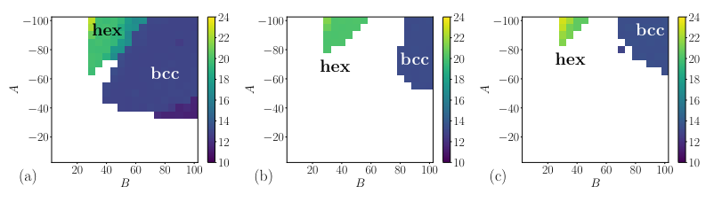

A data enthusiast with a statistical lean Phillip currently splits his time between his PhD thesis corrections and working with world leading biostatisticans at the MRC Biostatistics unit. He has hands on experience deploying machine learning models against vast datasets as well designing field leading Python software. His hobby projects tend to focus on sport and meta-sport, once he’s tidied them up you’ll be able to find them here too. In the meantime please enjoy a nice figure from his working life as well the obligatory picture of his face.
